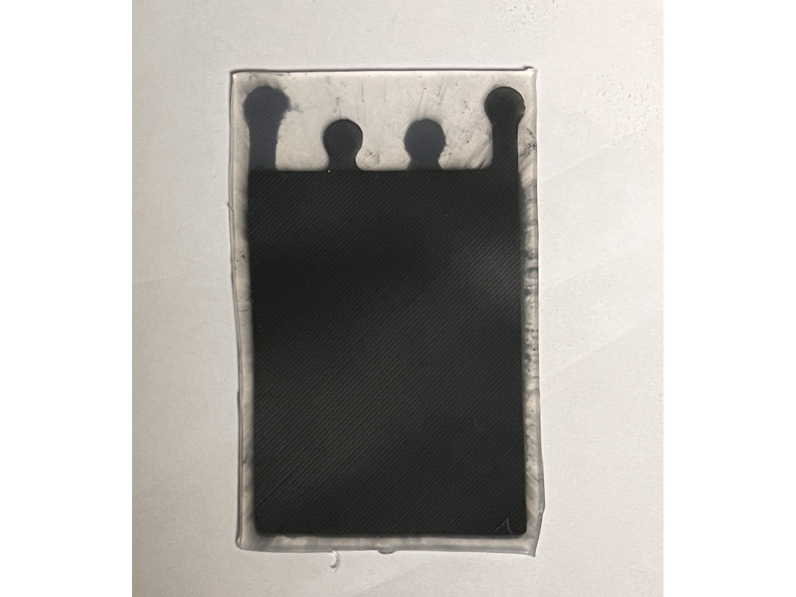
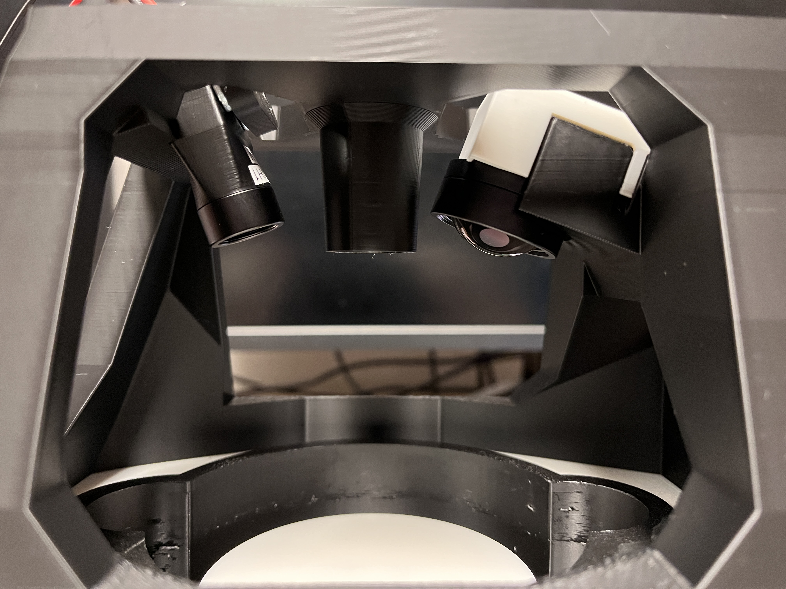

Custom Spin Coater, High-Resolution Measurement, and Bio-Inspired Actuators
Over the spring, summer, and fall of 2025, I interned at the Mechatronics Research Laboratory. I was tasked with designing a manufacturing method for soft, bio-inspired robotic actuators. The actuators are intended to be used for propulsion in underwater robotics, especially in cases were long periods without maintenance are expected such as microplastics research and cleanup.
After the spin coater was completed, the project evolved into testing of actuator samples, and into systems to measure the (very flexible) spun samples non-destrutively and without deformation. The method we settled on was the use of an infrared laser reflected into a sensor.
Spin Coater
This project started with the design of a custom spin coater. The initial goal for the system was to manufacture sheets of silicone very repeatably, and I determined that the best wayt to accomplish this was to spin the uncured silicone at a high RPM, a process known as spin coating. From there, the silicone would cure and be removed from the coater for use in soft robotic actuators.
The mechanical design of the spin coater is somewhat straightforward: the motor of the spin coater is directly connected to the spin plate via a series of adapters. The plate itself is held in place via a light friction fit to pins on an adapter, which is sufficient given the masses and expected spin speeds. Excess material is allowed to fly off the edge of the plate into a dedicated groove underneath to prevent the Coriolis effect from altering the final thickness and to avoid the need to deposit exact quantities of material. This also allows for the easy removal of spin plates, which allows for batches of samples to be made without waiting for them to cure in the machine individually.
The motor chosen was a REV NEO 550 with a SPARK MAX motor controller, chosen because of my familiarity with the REV Robotics ecosystem. The velocity control PID parameters were encoded in the motor controller firmware, but extra effort was required to send setpoint commands from a regular Arduino instead of an in-ecosystem microcontroller. This was done via CAN Bus, and allows for arbitrary velocity profiles over time.

The completed spin coater, disassembled to show the motor, motor controller, Arduino, and CAN Bus connection.

The completed spin coater, without the spin plate to demonstrate the method of attachment (friction-fit pins and an O-ring to ensure even contact).

A video demonstration of the completed spin coater.
Soft, Bio-Inspired Robotic Actuators
After the spin coater was completed, I transitioned work towards manufacturing actuator samples for testing. I cannot go into too much detail, because this work is not yet published, but the fine details of the actuator designs were refined until they could achieve motion consistently.
{kind=link}

An example actuator, fully assembled.

An image of the testing apparatus for the actuators.
Optical Measurement System
After I has made a few test samples of the actuator, my PI and I came to the conclusion that we needed a more robust way to measure the thickness of samples generated by the spin coater. Up until then, I had been using a pair of calipers, which was not ideal given how flexible the silicone sheets were. They would deform too much during measurement, and the accuracy suffered.
We decided on implementing an optical measurement system that integrates with the spin coater, with a goal resolution of 10 microns to match that of the calipers. This system would bounce an IR laser off of the sample to measure its thickness. Once again, this project is a component of an unreleased paper, so for the time being I am unable to go into further detail.

The full spin coater, with the integrated measurement setup.
{kind=link}
